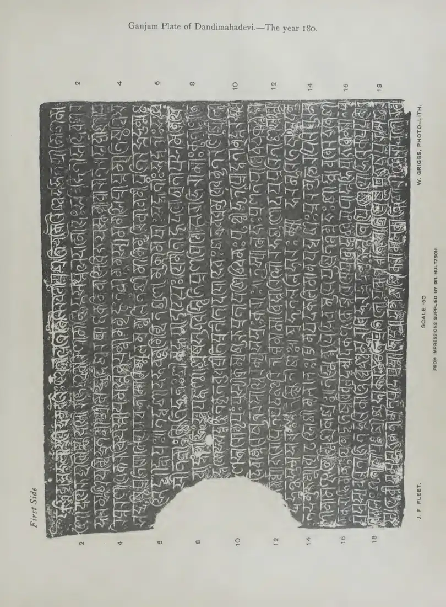
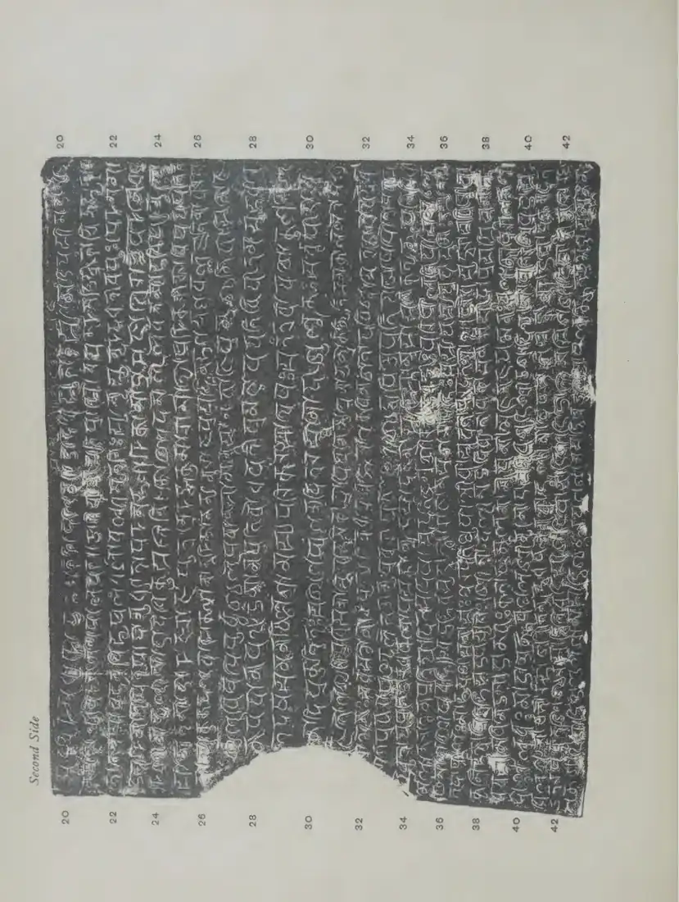

Two Grants of Dandimahadevi
TWO GRANTS OF DANDIMAHADEVI.
BY F. KIELHORN, PH.D., LL.D., C.I.E.; GÖTTINGEN.
The two grants of which at Dr. Hultzsch's request I give an account here from excellent impressions supplied to him by Mr. Venkayya, were preserved in the office of the Collector of Gañjām and will be deposited in the Madras Museum. There is no information as to where or by whom they were discovered. They have been briefly noticed already in Mr. Sewell's Lists of Antiquities, Vol. II. p. 32 f., Nos. 216 and 217;5 and I have for years been in possession of rubbings of them which formerly belonged to the late Sir A. Cunningham. The grants record donations by a lady named Daṇdimahâdêvi, whose ancestors are enumerated in both, in almost identical verses.
A.— DAṇDÎMAHÂDÊVÎ'S GRANT OF THE YEAR 180.
This is a single copper-plate which measures about 1'1/4" broad by 101/8" high, and is inscribed on both sides. On to its proper right is soldered a seal, half of which sticks to the plate, while the other half projects beyond it. This seal rests on an expanded lotus flower the petals of which enclose it; it is circular and measures 23/4" in diameter. It bears in relief on a countersunk surface, across the centre, the legend śrīmad-Daṇdimahadêvi, in characters resembling those on the first side of the plate; above the legend, a couchant bull facing to the proper right, with the sun and the moon's crescent above its hump and a conch-shell above its hips; and below the legend, two straight lines over an expanded lotus flower the stalk of which rises out of the margin of the seal.— The writing is well preserved. The size of the letters is between 3/8 and 7/16" on the first side of the plate, and between about 1/4 and 3/8" on the second side. Both the general style of writing and the forms of individual letters shew that the two sides of the plate were written by different persons. The writer of the first side, who affects a monumental style of writing, apparently has taken some pride in his work and has done it fairly well; the writer of the second side, who writes in a current hand, has performed his task in a very slovenly manner and committed many blunders, some of which I am unable to correct. The characters on both sides belong to the northern part of Eastern India. They
1 From an inked estampage supplied by Dr. Hultzsch.
2 Up to this, the text is practically identical with that of the preceding inscription.
3 The anusvāra stands at the beginning of the next line.
4 Read जेयुन्; after this comes a sign the meaning of which I do not know.
5 The prince 'Indulâlâ' of Mr. Sewell's account, to whom is ascribed the feat of having rescued his brother's throne, owes his existence to the epithet vyūdha-bhôgîndra-līlaḥ in verse 6 of the two grants. Most of the princes who are really mentioned in the grants have been omitted by Mr Sewell's informant.
may be classed together with those of e.g. the Nadagâm (in Gañjâm) plates of Vajrahasta of Śaka-Samvat 979 (No. 357 of my List of Inscr. of North. India), the Bâmanghâtî (in Orissa) plate of Raṇabhañja (ibid. No. 655), the Orissa (?) plates of Vidyâdharabhañja (ibid. No. 658), the Paṭṇâ, Kaṭak and Kudopali plates of Mahâbhavagupta I. and II. (ibid. Nos. 659, 660, 664 and 665), the Buguđa (in Gañjâm) plates of Mâdhavavarman (ibid. No. 673), the Gañjâm plates of Prîthivivarman (ibid. No. 672), and even the Assam plates of Ratnapâlavarman, Indrapâlavarman and Balavarman (ibid. Nos. 711-714). To prove this with full details would lead me too far here, but I may invite the reader's attention at least to the forms of the aksharas ṭa and ṭta used in the present inscription (e.g. in the word khêṭa in line 30, and in Ummaṭta- at the end of line 5), the type of which is equally found in all the eastern inscriptions enumerated,1 while it is absent from the records of other parts of Northern India. Of peculiar forms of letters on the first side of the plate I would point out that of the letter n (e.g. in nivâsi-, l. 3, and ânandañ-, l. 4), which has found no place yet in our palaeographic Tables; it also occurs in the Nadagâm plates of Vajrahasta (above, Vol. IV. p. 189, and Plate, e.g. in bhuvana-vinuta-, l. 1). I may mention besides that in the word charitârtha- in line 12 the r of the akshara rtha clearly is written on, not above, the line. On the second side attention may be drawn, amongst other things, to the form of the letter h (e.g. in mahiyasî mahîm=ahi- in line 20), which also is absent from our palaeographic Tables, but occurs e.g. in the Orissa (?) plates of Vidyâdharabhañja (Jour. Beng. As. Soc. Vol. LVI. Part I. Plate ix.); to the form of the subscript û, e.g. in chi[hna]-bhûtâ, l. 21, and vabhûva, l. 22, which is the form of û constantly used in the Nadagâm plates; to the medial â in pathârha (for yathârhañ), l. 28, in the ṇâ of Dâpâlavah, l. 40,2 and in the grâ of -grâmâ, l. 41; to the fact that the letters t, r and j occasionally are turned the wrong way, as in chiram- and sutâ tasyâ in line 20, and °dhirâja-, l. 23; to the final t in samvat, l. 35, and śrîmat, l. 38; to the occurrence of the rare letter jh in ajhêraṭa- at the end of line 42;3 and to the apparently very modern forms—peculiar, so far as I can see, to Orissa—of the letters p, ph and sh in the corrupt passage mâ bhud-aphasanâ saḥ para-datishu in line 37. Nor would I omit to mention that in line 26 the first akshara of the word which I have transcribed by [sth?]ânântarî[k]ân- is denoted by a strange sign which bears no resemblance at all to the ordinary sign for sth.4 But what in this inscription—a record which from its general appearance could hardly pretend to any great antiquity—seems to me most remarkable, is the employment of numerical symbols5 in the date of it (in lines 35 and 36), which I have transcribed by samvat 100 80 Mârgaśirsha-vadi 5 (?). In this respect, I can compare with the present grant only the Bâmanghâtî (in Orissa) plate of Raṇabhañja, in which the year of the date is similarly denoted by numerical symbols (for 200, 80 and 8).6 It is noteworthy that both these grants come from the same part of India, where
1 In some of these inscriptions it is difficult to distinguish between the signs for ñ and ṭñ, and there are some in which no difference at all is made between the two.
2 The same sign for ṇâ is used in line 39, in the word transcribed by [pû?]ṇâ[kó]. The medial â is occasionally written in the same manner in the Kudopali plates (above, Vol. IV. p. 258, Plate), in the aksharas gâ, ṇgâ, ṭñâ, dhâ and śâ (and also in ṇó).
3 The sign for jh, here employed, resembles the sign for the same letter used in the Assam plates of Vallabhadêva, above, Vol. V. p. 185, l. 41, in the phrase sa-jhâṭa-viṭapa. A similar sign for jh also occurs in line 11 of the Kudopali plates, above, Vol. IV. p. 258, where the actual reading, as I now see, is sa-jhâṭa-viṭap-âranya (for sa-jhâṭa-viṭap-âranya), not sa-[vâ?]ṭta-viṭap-âranya.
4 The sign employed by the writer is perhaps really meant for thâ, not sthâ.
5 Above, Vol. IV. p. 195, note 4, I have given the latest known copper-plate inscriptions with numerical symbols, the time of which can be fixed with certainty, and have stated that they are all anterior to A.D. 800. The only stone inscriptions with numerical symbols which are later than A.D. 800, so far as I know, are Nos. 501, 545 and 560 of my List of Inscr. of North. India.
6 See Jour. Beng. As. Soc. Vol. XL. Part I. Plate ii. last line; and Prof. Bühler's Ind. Palaeographie, Plate IX. col. xviii., where (probably only in consequence of the numerical symbols) Raṇabhañja's plate is assigned to the 9th century A.D.
such symbols therefore would seem to have been longer in practical use than in other parts of the country. As regards the individual signs employed in this inscription, the symbol for 100 is something between lva and lu, just as the symbol for 200 in the Bâmanghâtî plate is lú; and that for 80 is nearly identical in both plates. The exact form of the symbol—if it be intended as such—for the number of the tithi of the date I have not been able to trace elsewhere, and I am very doubtful whether I have correctly taken it to denote '5.'1 — Excepting the description of the boundaries in lines 42 and 43, where some local dialect appears to be used, the language of the inscription is Sanskrit. The first part of the grant up to line 22, which gives the genealogy of Danđimahâdêvî, is in verse, but includes a short prose passage in line 3. The formal part of the grant, from line 22 to the end, is in prose, except that in lines 36-39 it contains some benedictive and imprecatory verses or fragments of verses—here, as in some cognate inscriptions, given very corruptly—as well as a verse which records the name of the composer of the prašasti, i.e., as I take it, of the genealogical account. In respect of orthography the only general remarks called for are, that the letter b throughout is denoted by the sign for v, and that the writer of the second side (like some Telugu writers) has found some difficulty in distinguishing between the vowels i and î. The second side of the grant, as I have intimated already, has been written so carelessly that it would be impossible here to point out all orthographical mistakes. On the first side it may suffice to call attention to the use of the akshara tsa instead of chchha in the word saptatsada (for saptachchhada) in line 2, which finds its counterpart in the common samvachchhaa (for samvatsara).— I regret that in the formal part of the grant there are several words or phrases regarding the exact reading and interpretation of which I am uncertain. They are the words transcribed by pa[vâ?]ka-, l. 27, gôku[ṭa]-, l. 29, =lékhari-pravésanâs[t]iyâ, l. 31, and [pû?]nâ[kô], l. 39. I also am unable to interpret the greater part of lines 42 and 43, which, as stated already, are not in Sanskrit.
The inscription is one of the Paramabhaṭṭârikâ Mahârâjâdhirâja-Paramésvarî Danđimahâdêvî (l. 24), whose ancestors are enumerated in verses 2-9. There was a king named Ummaṭṭasimha (l. 5), from whose family sprang Maṅgapâda (l. 7) and other kings. In their family there was the king Lônabhâra (l. 9); his son was Kusumabhâra (l. 13); after him ruled his younger brother Lalitabhâra (l. 13); he was succeeded by his son Śântikara (l. 15), and he again by his younger brother Šubhâkara (l. 18). When the last of these princes died, his queen2 ascended the throne, and afterwards her daughter Danđimahâdêvî (l. 20) 'ruled the earth for a long time.' This queen, a devout worshipper of Mahêsvara (Šiva), from 'the camp of victory'—appropriately compared in verse 1 with the commencement of autumn (the season of war)—at Guhêsvarapâṭaka (l. 3), issues the following order to the present and future functionaries in the Kôngôda-manđala (l. 24), viz. the Mahâsâmantas, Mahârâjas, Râjaputras, Antaraṅgas, Kumârâmâtyas, Uparikas, Vishayapatis, Tadâyuktakas, Dânđapâsikas, Sthânântarikas3 and others who enjoy the royal favour, those belonging to the regular and irregular troops and (royal) favourites;4 and to the people, headed by the . . .5 Sâmantas and Sâmavâjins,6 who dwell in the eastern division of the Varadâkhanda-vishaya (l. 26):—
"Be it known to you! For the increase of the religious merit of our parents, ourselves and all beings, we have, on the occasion of a saṅkrânti (l. 34), by means of a copper-charter
1 The doubtful sign seems to me to bear some kind of resemblance to the symbol for 5 in the Chikkulla plates, above, Vol. IV. p. 197, l. 26; Plate.
2 Her name is not given, but from the epithets applied to her in verse 9 we may suspect that it was Gaurî.
3 I do not remember having met this term before; sthânâdhikaraṇika occurs above, Vol. III. p. 320; l. 11 of the text, and sthânâdhikrita in Ind. Ant. Vol. XXV. p. 179, l. 14.
4 Compare above, Vol. IV. p. 200, l. 10, châṭa-bhaṭa-vallabhajâtiyâ; instead of vallabha we have râjavallabha above, Vol. III. p. 342, l. 6; p. 347, l. 7; and elsewhere.
5 See below, p. 138, note 25.
6 The term sâmavâjî[n] occurs above, Vol. IV. p. 258, l. 14; instead of it we have sâmavâjika, ibid. p. 200, l. 11; and sâmavâyika, above, Vol. III. p. 352, l. 27 (where the published text has sâma[m*]t-âsika).
with pouring out of water given, in the way of a perpetual endowment and free from taxes,1 the village of Villa (l. 29) which belongs to this vishaya—with the uparikara, with the uddéśa,2 with3 its weavers, gôkuṭas (?), distillers of spirituous liquors and other artisans (?), with its hamlets3 (?), landing-places (or steps on the river-side), ferry-places4 etc. and thickets, exempt from all molestation, not to be entered5 . . . . , in accordance with the maxim called bhúmichchhidra and for as long as the moon, the sun and the earth endure— to the door-keeper Dhavala (l. 34), the son of Vâs[u ?] . . and grandson of Apratidâghôsha, an immigrant from Vingipâṭaka (?), belonging to the Viśvâmitra gôtra, with the pravara Dêvarâta and anupravara Audala, and student of the Kaṇva-śâkhâ. Wherefore, out of respect for what is right, you should preserve this our gift !”
This order is followed (in line 35) by the date, the 5th (?) of the dark half of Mârgaśirsha of the year 180; and (in lines 36-38) by benedictive and imprecatory verses. Lines 38-40 repeat that this is a charter of Daṇđimahâdêvi; give the name of the author of the praśasti, the poet Jambhala, son of the great poet Jayâtman (?); and record the names of certain officials, viz. the Râṇaka Dâṇâlava who was the dútaka (?) of the grant, the Mahâkshapaṭalika Nrî[simha ?], the Mahâsamndhivigrahin Ugrâditya, and the Mahâpratihâra (?) Prahâsa.
Line 41 adds that a quarter (?) of the village of Villa on the occasion of a samkrânti was given by Dhavala to the Brâhmaṇs; lines 42 and 43, in which the names of the villages of Hôṇdala and Khaïrapaṭa occur, apparently state the boundaries of the village granted; and the inscription ends with the name of the engraver, Sambhaka.
Beyond saying that, judged by the writing, this inscription could hardly be older than the 13th century A.D., I do not venture at present to express any opinion regarding its age. I do not know to what era the year 180 of its date and the year 288 of the date of Raṇabhañja's grant should be referred, and can only trust that other inscriptions, similarly dated, will be obtained from the same part of the country, which may both help us to fix definitely the dates of these grants and throw more light on the general question of the employment of numerical symbols in Eastern India.
The place Guhêśvarapâṭaka from which the grant was issued, the villages mentioned in it, and the vishaya in which they were situated, I have not found on the maps. The name Kôngôda6 of the maṇdala to which the vishayas of both the grants A and B belonged I have from the first ventured to identify with the name Kong-u-t'o (Kong-yu-t'o) of Hiuen Tsiang (Beal's Si-yu-ki, Vol. II. p. 206), and I am assured by Professor S. Lévi that from a linguistic point of view this identification is in every respect unobjectionable. As stated by
1 The phrases akaratoëna and akarikritya are very common in grants from the same part of India.
2 Above, Vol. IV. p. 254, I have translated sôddéśa by 'with all their localities,' but uddéśa has probably a more specific meaning. Sôparikaraḥ sôddéśaḥ (which apparently is the proper reading also in Jour. Beng. As. Soc. Vol. LXIV. Part I. p. 125, l. 4 from the bottom) may be equivalent to the sôdraṅgaḥ sôparikaraḥ of other inscriptions.
3 In the phrase which commences here the reading of the word gôkuṭa appears to be certain, but its meaning is not apparent. For some expressions (the exact meaning of which is uncertain), in which the word prakriti occurs, see Ind. Ant. Vol. XXV. p. 183, note 82. For the general import of the phrase here used I would compare above, Vol. V. p. 112, lines 65 and 66, where the village-artisans are stated to be included in the grant; also Ind. Ant. Vol. XIV. p. 58, l. 52, and above, Vol. IV. p. 296, “We (also) gave the oil-mongers and the five (classes of) artisans as (his) slaves.” For taxes on looms etc. see South-Ind. Inscr. Vol. I. pp. 88, 89, 103, 155 etc.
4 Compare above, Vol. V. p. 52, last line of the text (“ferry-boats” etc.).
5 The phrase commencing with =lôkhant(?)- I am unable to explain. It recalls, of course, such well-known expressions as achâṭabhatapravêśa, achâṭabhatapravêśya, akimchitpragrâhya, ahastaprakshôpantya, etc.
6 According to the grant B the Kôngôda-maṇdala (or -maṇdalaka) was in Dakshiṇa-Kôśa!â.— For a village or town named Kaingôda see above, Vol. III. p. 42.
Mr. Beal, Sir A. Cunningham supposed Kong-u-t'o (hitherto transcribed by Kônyôdha) to be Gañjâm, and Mr. Fergusson took it as nearly certain that the small kingdom of Kong-u-t'o was 'somewhere between Kuttack and Aska' (in the Gañjâm district). Inasmuch as both our grants come from Gañjâm, either statement would tend to support my identification. On the maps I have searched in vain for a name like Kôngôda. In Hiuen Tsiang's account of the kingdom of Kong-u-t'o there is one point to which, in concluding these remarks, I may draw attention. The written characters of the people of that kingdom, he says, 'are the same as those of Mid-India.' In other words, they belonged to the northern alphabet, just as is the case with the characters of the grants here edited, grants which otherwise one would rather have classed with the southern inscriptions.
TEXT.1
First Side.
1 Ôm2 [||*] Svasti3 vyastajal-âbhra-vibhrama-haraih4 śvêtâ[tpa]tr-ôtkarair=
6 avathîya-śrutichâmarais=va(cha) 7 bha(ha)sita-vyâkôśa-kâ-
2 śôdayair=uddâmair=mmada-saurabhais=cha kariṇâm=âkshipta-saptatsa(chchha)d-8âmôdaih
sannihitâm sad=aiva śara-
3 d-ârambha-śriyam=vi(bi)bhratah || [1*] Śrímad-Guhésvarapâttta(ta)ka-nivâsi-9
vijayaskandhâvârât || Sarvv-âśâ-pa-
4 ripûraṇ-âdhika-ruchir=yas=tâpam=astan=nayann=ânandaṇ=kṛitavân(ñ)=janasya manasi
10 prâptam=pratishtha(shṭhâ)ñ=chiram [|*]
5 saddrishṭi-pratirôdhi yêna cha tamô nirmmûlam=û(u)nmûlitam
śrímân=indur=iv=âvanîpatir=abhûd=Ummaṭta-
6 singh-âhvayah11 || [2*] Tad-vamśâd=abhavann=anindita-guṇâ muktâmayâh
sadgatâh12 sad-vṛittâh sukha-
7 sl(śi)talâh kshitibhṛitah13 śrí-Madgapâd-14âdayah | yê nîtâ hṛiday-ôgra-tâpa-
sa(śa)manê dê-
8 v-ânganâbhih svayaṇ=kaṇṭhâslêsha-sukha[m?] sthiti-praṇayinô hâr-âbhirâmâh
kṛitâh || [3*] Ta-
9 d-vamśê=bhavad=ûrjjita[h*]16 kṛita-vu(bu)dha-prîti[h]16 pratît-ôdayô dêvah
śatruvadhû-mukhêndu-taraṇi[h]17 śrí-Lô-
10 ṇabhârô18 nṛipah [|*] yasy=âkramya gurupratâpa-śikhinah prithvîbhṛita[h]19
prôdva(ddha)tân dûram sarvva-
11 digantarêshu tarasâ20 svairam=prasasruh karâh21 || [4*] 22 Tasy=âtmajah
praṇata-pârthiva-chakra-chûdâ-
12 nirvvyâja-rôpita-padaś=charitârtha-nâmâ [|*] vistâri-saurabha-guṇ-ôdaya-pûrit-âśas=
tasmâ-23
1 From impressions supplied by Mr. Venkayya.
2 Denoted by a symbol.
3 Metre of verses 1-4: Śârdûlavikrîd ta.
4 The grant B has -vibhrama-dharaih.
5 B has svêtâtapratr-; read svêtâtapatr-.
6 B has astiya-; read aśvîya-.
7 B has hasita-.
8 B has saptachchhad-.
9 B has pâtaka-vasita-vi°; I should have expected pâtak-dvâsita-vi°.
10 B has only prâtam chiram.
11 B has sih-dhvaya; read simh-dhvayah.
12 B has sadâtah; read saṅgatâh (or saṅgatâh). B omits
13 B has sthitibhṛitah.
14 B has śrímadagapâd-; read śrí-Maṅgapâd-(?).
15 B has =urjitah.
16 The sign of visarga was originally omitted, but seems to have been inserted afterwards; B has -stiih.
17 This sign of visarga also was originally omitted.
18 B has -Lôṇahârô.
19 This sign of visarga also was originally omitted.
20 B has tarshâ.
21 B has karâ |.
22 Metre: Vasantatilakâ.
23 Instead of tasmâd B has śrímân, which is a better reading.
13 d=abhût=Kusumabhâra iti kshitíšah || [5*] Abhríta1 Lali[ta*]bhârah kshmâ-bharam=bhûri-têjâs=tad=anu
14 tad-anujanmâ vyûdha-bhôgíndra-lílah | anayad=amalimânam yad-yašahpûram=uchai(chchai)r=api ripu-rama-
15 nínâm=añjan-ônmiśram=aśrah 2 || [6*] 3 Tasmin=nripê divam=upêyushi tat-tanûjah śâst=âvanêr=ajanê(ni) Šâ-
16 ntikar-âbhivâ(dhâ)nah [|*] yên=ôddhritêshv=akhila-durmmada-kanṭakêshva(shu) rêmê 4yavô(thâ)-sva(su)kham=apâsta-bhiyâ janêua || [7*] Tasya
17 prasa(śa)sya-charit-â[r*]jita-bhûri-kâ(kí)rtti[r*]=vviśvambharâ-vibhur=abhûd = a n u j a s = tatô=pi [|*] śrêyôbhir=êka-padam=ity=a-
18 khilaih śri(śri)t-âtmâ yah śrí-Šubhakara iti prathitô yavô(thâ)rtham || [8*] Tasya tripishṭapa-jusha[h]5 paramêśvara-
19 sya dêví samasta-janatâ-ma(na)ta-padêpadmâ6 [|*] siñghâsanam 7 śaśikar-âmala-kâ(kí)rtti-gaurî Gaur=íva gaurava-
Second Side.
20 8padam chiram=adhyarôhatah9 || [9*] Tatô 10 Daṇdimâhâdêvi 11 sutâ tasyâ 12 mahi(hí)yasí [|*] mahím=ahi(hí)-
21 nasâ(yâ) 18 matyâ chê(chi)ra-kálam=apâlayata 14 || [10*] 16 Avichchhâ[nn]âyatiprâ[s]au vamsê[ka]ra-mahibhrítâm [|*] chi[hna]-bhûtâ pa-tâk=êva yâ va(ba)bhûva vibhûshaṇam || (l) lâvaṇy-âmríta-niḥsyanda-16 sundaram dādhatî vapuh |(l)[11*] Paramamâ-
23 hêsvari 17 mâtâpitri-pâdânudhyâtâ paramabha[tṭ]ârikâ mâ(ma)hârâjâdhirâja-paramêsva-
24 ri(rí) śrímad-Daṇdimâhâdêvi 18 kusalini |19 Kô[m]gôda-mê(ma)ṇdê(ṇda)lê vartamâ[na*]-bhavishyan-mâ(ma)hâ-
25 20 sâmaintam-mâhâraja-râjaputr-ântaraṅga-kumârâmâty-ôparikaríkâ-21visha y a p a t i - t a -
26 22 dâtyukuka-daṇdavâsika-[sth?]ânântari[k]ân=anyân=[cha?]23 râjaprasâdina(nô) bha[ṭa]-châṭa-valla[bha*]jâtinâ 24 Varadá-
27 khaṇda-vishayê pu(pû)rvva-khaṇdê pa[vâ?]ka-25sâmanta-sâmavâji-pramukha-nivâsinô ja-
13 B has =ahtnasâ.
15 Read avichchhinn-ṭyati-prâptau (?) vaṇśakara-mahîbhrítâm.
1 Metre : Mâlinî; B omits the first two words of this verse.
2 Read =áiru, which is the reading of B.
3 Metre of verses 7-9: Vasantatilakâ.
4 B has yathâ-suddham=.
5 This sign of visarga was originally omitted.
6 Read =pádapadmâ.
7 B has sihâsanam; read simâsanam.
8 Above the aksharas mâhâdêvi sutâ tasyâ of this line 10 aksharas are engraved in small letters. So far as I can make them out, they are sâmaintasya muḍamalapaja; I do not understand their meaning.
9 B has =adhyarôt (or °rôta); read =adhyarôhat.
10 Metre of verses 10 and 11: Ślôka (Anushṭubh). Verse 11 contains six Pâdas.
11 B has Daṇdimahâvt; read Daṇdimahâdêvt. 12 B has tasya.
14 Read =apâlayat.
16 Read =nisyanda-.
17 Read hêsvarî.
18 Read =Daṇdimahâdêvt kuśalint.
19 This sign of punctuation is superfluous. In the following name the sign of anusvâra is very faint in the impressions; in the grant B the name is written Kôngôda.
20 Read sâmaintâ-mahârâja.
21 Read =ôparika.
22 The second akshara of this line, transcribed by tyu, is really tyâ with the sign of u below it; of the 10th akshara, transcribed by sthâ, the sign for sth seems to be no proper letter at all. Read dâyuktaka-dâṇdapâśika. In B sthânântarikân= is quite clear.
23 Read =any âmś=cha.
24 Read °játtyân; compare above, Vol. IV. p. 200, l. 10, and note 9.
25 Read pradhâna-(?) or râṇaka-(?). For the following sâmavâji compare ibid. p. 258, l. 14, and note 16.
Plate 1 is bound after this page.
Plate 2 is bound after this page.
28 napadâna1 pa(ya)thârha[m*] mânayati vô(bô)dhayatî(ti) 2pramajñâpayati [|*]
3Viyîtam=asu bhavâra-
29 tadashasamana-Villa-grâma[h*]4 sya(sô)parikara[h*] sôthêshah5 sa-taintravâya-gôku[ṭa]-6saunđî-7
30 k-âdi-prakutitah sa-khêṭa-ghata(ṭṭa)-nadi(dî)tarasthân-âdî(di)-gulmakah sarvva-pîdâ-va-
31 rjitô=lêkhari-pravêsanâs[t]iyâ 8 bh[û]michhîdr-âpivâna-9nyâyên=â-chandr-ârka-kshiti-sama-kâlam ma(mâ)tâpitrô-
32 r=âtmanah sarvva-sa[t*]tvânâ[ñ=cha] puky(ny)-â[bh]ivrî[d*]dhayê Vinginâṭaka-10 vin[i]rgatâya Višvâmitra-gôtrâya Dêva-
33 râta-pravarâya Audal-êta11 anupravarâya Kanḍa(nva)śâkh-[â]ddhyâyi12 Apratiđâghôsha-pautrâya Vâs[u ?]-
34 13 -putrâya pratihâra-Dhavalâya saînkrântyâm hast-ôdakên=âsm[â]bhis=tâmvrasâsa[n]ikrîty=âksbapanivi-dha-14
35 rmên=âkaratvêna pratiyâ(pâ)ditasad=16êsh=âsma-dati=ddharma-gauravâd=bhavadbhîh pariphalaniyâ16 [||*] Samvat17 100
36 80 Mârgaśirsha-vadi 5(?) [||*] 18Vahubhir=vasuddhâ [da*]ttâ | râjâna19 Sagar-âdibhîh [|*] yasya yasya yadâ bhumih tasya tâsya
37 tadâ pâlah [||*] Mâ20 bhud=aphasanâ sah para-datishu pâ[tth]îvâ [||*] Sva-datâ para-datam=vâ yô harê vasuddharâ [|*] sa vishṭhâyâ
38 krîmir=bhutvâ pitribhi saha pachyatêh |(||) 21Śrîmat Daṇdimahâdêvyâ tâvachhâsanam=ast=îdam | Prasasti22 samasta-
39 vachasâ kavin=êha mâ(ma)hâkavêh [|*] krîtâ Jambhala-nâmn=êyam=âtmajênam23 Jayatmanah [||*] 24[Pû ?]nâ[kô]=pi rânaka-śrî-
1 Read -nivâsi-janapadâmâ=cha(?).
2 Read samâjñâ°.
3 Read Viditam=astu bhavatâm=êtad-vishaya-sambaddha-.
4 Of the name of the village (read by me Villa-) the consonant of the first akshara has a somewhat odd form, and the second akshara might possibly be lga; below, in line 41, the name is written either Vila- or Vêla-.
5 Read sôddêsah.
6 B has distinctly gôkuṭa; in the present inscription the sign transcribed by ṭa differs somewhat from the sign for ṭa which elsewhere is used here.
7 Read -śaunđik-âdi-prakrîtikah.
8 B has =lêkhanî-pravêiatay[â]. I do not find a similar term (containing lêkhanî) elsewhere, and am unable to suggest a suitable emendation.
9 Read bhûmichchhidr-âbhidhâna-.
10 Read Vingipâtaka-(?) or Vengipâtaka-(?).
11 Read °rây=Audal-êty-anu°.
12 Read -âddhyâyinê, and compare above, Vol. IV. p. 258, l. 16 of the text. With the following name which is clear in the impression, compare Kôighôsha and Vallabhaghôsha, above, Vol. III. p. 344, l. 42 of the text.
13 Here one akshara is mutilated and illegible in the impression.
14 Read tâmraśâsanikrîty=âkshayantvâ-dha-.
15 Read °dtas=tad=êsh=îsmad-dattir=.
16 Read °dûhih paripâlantyd.
17 Read samvat; compare my introductory remarks.
18 I consider it unnecessary to correct all the numerous mistakes in the following verses; compare above, Vol. IV. p. 201, l. 23 ff., and p. 259, l. 22 ff.
19 Read râjânah, which actually occurs in Ind. Ant. Vol. XIII. p. 49, l. 13. Instead of it, we have râjdne also above, Vol. III. p. 19, l. 24, and Vol. IV. p. 201, l. 24; râjanai in Ind. Ant. Vol. XIII. p. 276, l. 19; and râjana above, Vol. IV. p. 259, l. 21.
20 Intended for mâ bhûi=aphala-śaînkt vah para-dattishu (instead of the ordinary para-datt=êti) pârthivdh; compare e.g. above, Vol. III. p. 45, l. 47. The second half of the verse, commencing with svadânât, is omitted here.
21 Read śrîmad-Daṇdimahâdêvyâs=târach=chhâsanam=(?) or =tâmra-śâsanam=(?).
22 Metre: Ślôka (Anushṭubh).— Read praśastiḥ; for the following samasta-, which is quite clear in the impressions, I cannot suggest a suitable emendation.
23 Read °jêna Jayîtmanah(?).
24 The engraving is quite clear here, but I can read with confidence only the second akshara (nâ).— Read âétakô(?).
40 Dâṇâlavaḥ mâhakâshapatala1 śrī-Nrī2 | mâ(ma)hâsandhivigrahi(hî) śrī(śry)-
Ugrâditya[h*] || mâpratira3 śri-P[r]ahâsaḥ [||*]
41 4Vila-grâmâ5 chat[v]âr[ô?] bhâgâ[h*] | tan-maddhê(dhyê) Dhavalêna
vrâ(brâ)hmaṇânâ[dêsha ?]6 bhâga[h*] saŋkrântyâ[m*] hast-ôdakêna
datam7 [||*]
42 8U[tta]ra-parvvata-śikhara sâddhi tivadīsîgâđi pôchâđigâđi hôṇđimasigagâđi
sâddhî ajhêraṭa-
43 [ga]kagâđi sâddhi Hôṇdala-grâma sâddhi Khaïrapaṭa-grâma sâddhi cha[tu]-
śim-ôpalakshita9 [||*] Utkâmṇṇa10 Sambhakêna [||*]
B.— UNDATED GRANT OF DAṇĐÎMAHÂDÊVÎ.
This is another single copper-plate which measures 10 broad by from 8 to 8 high and is inscribed on both sides. On to its proper right is soldered a circular seal, 2 in diameter, in the same manner as in the grant A. This seal bears in relief on a countersunk surface, across the centre, the legend śrīmad-Daṇđîmahâdêvî, in the characters of the inscription ;11 above the legend, a couchant bull facing to the proper right, with the sun and the moon's crescent above its hump and a conch-shell above its tail, and on each side of the bull what may be either an elephant-goad or a lampstand ; and below the legend, two straight lines over an expanded lotus flower the stalk of which rises out of the margin of the seal.— The writing is well preserved. The size of the letters is between and . The characters furnish another specimen of the northern alphabet peculiar to Eastern India ; they closely resemble those of the Orissa (?) plates of Vidyâdharabhañja, Jour. Beng. As. Soc. Vol. LVI. Part I. Plate ix. The language of the inscription is Sanskrit. Lines 1 to (the middle of) 20 are substantially identical with lines 1 to (the middle of) 21 of the grant A. The remainder of the text, which contains the formal part of the grant, is in prose, except that it includes a benedictive and imprecatory verse in lines 35-37. In respect of orthography, what strikes one most is the promiscuous employment of the three sibilants : s is often used for ś, and ś nearly as often for s (e.g. in śalila, l. 33, and śakalam, l. 36) ; sh for ś in shâsana-darshanâd=, l. 34 ; ś for sh in puruṣai (for purushaiḥ), l. 37 ; and s for sh in manusya-, l. 36. The consonant b is throughout denoted by the sign for v, and medial û by the sign for u. Besides it may be noted that t is used for d in bhumichchhitr-, l. 29, and Autalya-, l. 39 ; and that upêjushi, l. 14, is written for upêyushi ; -âpivirdhayé, l. 33, for -âbhivriddhayé ;12 and udârhita, l. 36, for udâhrita. In general, the formal part of this grant is less faulty than that of the grant A ; its phraseology is about the same.
This is another inscription of the Paramabhaṭṭârikâ Mahârâjâdhirâja-Paramêśvarî Daṇđîmahâdêvî (l. 21), the names of whose ancestors are given exactly as in the grant A. From ‘the camp of victory’ at Guhêśvarapâṭaka (l. 3) this queen issues the following order to the
1 Read mahâkshapaṭalikaḥ.
2 Here part of the name (perhaps sîmhaḥ) has been omitted.
3 Bead mahâpratihâdraḥ (?) śrī-.
4 The reading of the name here may be either Vila- or Vôla- ; compare above, l. 29, where the name apparently is written Villa-.
5 Read -grâmasya.
6 Read °ṇânâm=êka-(?).
7 Read dattaḥ.
8 The passage which begins here I do not understand. It apparently gives the boundaries of the village, but is not in Sanskrit. The word sâddhi (or sâddhî), which occurs in it five times, is written in another (unpublished) Gañjâm grant both śândhi and sândhi ; compare stmâ-sandhayaḥ above, Vol. III. p. 223, l. 16.
9 Read chatuṣśim-ôpalakshitaḥ ; compare above, Vol. IV. p. 200, l. 13.
10 Read utkirṇṇaṅ. (The Gañjâm grant mentioned above, note 8, has the extraordinary word udagirttam for utkirnam).
11 According to Mr. Sewell's informant the legend is “Śrī Mahâ Śômandthasvdmi in Telugu characters.” This statement is purely imaginary.
12 In line 30 this word is written correctly.
various functionaries, as they may be present from time to time, in the Kōngōda-maṇdalaka in Dakshiṇa-Kōšalā (l. 22), viz. the Mahásámantas, Mahârájas, Rájaputras, Antaraṅgas, Kumârâmátyas, Uparikas, Víshayapatis, Tadâyuktakas, Dáṇdapášikas, Sthânântarikas1 and others who enjoy the royal favour, those belonging to the regular and irregular troops and (royal) favourites; and also to the Mahámahattaras, Brihadbhógins,2 Pustakapálas, . . . and other officials in the Arttaṇi-vishaya (l. 25):—
“Be it known to you! For the increase of the religious merit of our parents, ourselves and all beings, we have, on the occasion of the uttarâyaṇa3 (l. 32), with pouring out of water given, free from taxes, the village of [Ga]rasâmbhâ which belongs to this vishaya—with the uparikara, with the uddêša, with its weavers, gôkuṭas(?), distillers of spirituous liquors and other artisans (?), with its hamlets (?), landing-places (or steps on the river-side), ferry-places etc. and thickets, exempt from all molestation, not to be entered . . . ., in accordance with the maxim called bhûmichchhidra and for as long as the moon, the sun and the earth endure—to the Bhaṭṭaputra Purushôttama, of the Kâśyapa gôtra, with the pravaras Kâśyapa, Avatsâra and Naidhruva, a member of the Vâjasanêya charaṇa and student of the Kâpya śâkhâ (of that Vêda). Wherefore, seeing this order, out of respect for what is right and out of respect for ourselves, nobody should cause any obstruction!”
This order is followed (in lines 35-38) by a benedictive and imprecatory verse; by the names of the writer, the Mahâkshapaṭalika Bhôgada, and of the engraver, the copper-smith [Kaṇṭha?]kaka; and by the statement that the village granted is (given as) contained within its well-known four boundary lines.
Lines 38 and 39 add that half of the village was given by the grantee Purushôttama to the Bhaṭṭaputra Ravika, of the Kauśika gôtra, with the pravaras Audalya, Viśvâmitra and Dêvarâta.
The inscription is not dated. Regarding the localities mentioned in it I can only refer the reader to my remarks on the grant A; the village granted by the present inscription, and the vishaya in which it was situated, I have not been able to identify.
TEXT.4
First Side.
19 . . . . . 5Tatô6 Daṇdimahâ[dê*]vî sutâ tasya7 mahîyasî [|*]
20 mahîm=ahînasâ(yâ) matyâ chira-kâlam=apâlayata8 || [10*] Para[ma*]mâhêsvarî mâta(tâ)pitrî-pâdânudhyâtâ parama-
21 bhaṭṭârikâ mahârâjâdhira(râ)ja-paramêsva(śva)rî śrîmad-Daṇđi(ṇđi)mahâdêvi kušalî(li)nî || tha9 || Dakshiṇa-Kō-
22 šalâyâm Kōngōda-maṇdalakê yathâkâl-âdhyâsinô
1 For this term and some others in what follows see the notes on the preceding grant.
2 I do not remember having met with the terms brihadbhógin and pustakapâla in other grants; with brihadbhógin one may compare the ordinary bhôgapati. I am not able to explain the term [ku]ṭakôlasa- of the text.
3 I take uttarâyaṇê (like the expression uttardyaṇa-nimittê of several Eastern Chalukya grants) to be used in the sense of uttardyaṇa-saṅkrântau, ‘ on the occasion of the sun’s entering upon his northern course.’
4 From impressions supplied by Mr. Venkayya.
5 Except for some various readings the most important of which have been given above under A, the preceding portion of the text is the same as in A, and need not therefore be published.
6 Metre: Šlôka (Anushṭubh).
7 Read tasyd, which is the reading of A.
8 Read = apâlayat.
9 The same akšharâ tha, between two signs of punctuation, is used at the end of Vidyâdharabhañja's plates mentioned above. Compare Ind. Ant. Vol. XVII. p. 140, note 45, and Prof. Bühler's Ind. Palæographie, p. 85. There should have been no sign of punctuation after kušalint.
Second Side.
23 1bhavishyan-mahâsâmanta-mahârâja-râjaputr-ântaraângara-2kumârâmâty-u (ô) par i ka-vishayapati-tadâyu-
24 ktaka-dânđapâsîka-sthânântarikâ[n]=anyân=api râjaprasâdinas=châta-bhata-vallabhajâtîy[â]-
25 n=Arttanî-vishayê=pi mahâmatatura-3vrî(bî)hadbhôgi-pustakapâla-[ku]tâkôlas-âdy-[â]dhikaraña4
26 yathârha[m*] mânayati vô(bô)dhayati șajñâpayati5 cha [|*] Viditam=astu bhavata(tâ)m=êtad-vishaya-samva(mba)ddha-[Ga]-
27 rasâmbhâ-grâmahșoparikaraħ sôddêșaħ sa-tavra(ntra)vâya-gôkuta-sô(șau)nđi[k]-âdi-prakîta(ti)kah
28 sa-khêta-ghatta-nadi(dî)tarasthân-âdi-gulmakaħ sarvê(rva)-pi(pî)đâ-vivarjitô=lêkhanî-pravêșatay[â]6
29 7bhumichchhitr-âpidhâna-nyâyên=â-chandr-ârka-kshiti-sama-kâla[m*] 8mâtâpimâtâpi-trôr=âtmanaħ sarva-sa[t*]tvânâñ=cha puny-âbhivriddhayê Kâșyapa-gôtrâya Kâ-șyap-Âvachchhâ-9Naidhruva-pravarâya 10Vâjasêna-charañâya Kânvasâkh-âyadhy[â]y[i]-11 nê bhata(tta)putra-Purushôta(tta)mâya12 ih=aiva utrâyanê datam-3 mâtâpitrô-r=âtmanas=cha puny-âpivirdhayê14 șaliladhârâ-purasarêna15 chandr-ârka-kshi-ti-sama-kâlam=akari(rî)krîtya pratipâditô=smâbhir=yatâm(tah)16 shâ(șâ)sana-darsha(rșa)nâ-
35 d=dharma-gô(gau)ravâd=asmad-gauravâch=cha na kênachit=paripanthinâ bhavitavyam [|*] Itî17 kama-
36 ladal-âmvu(mbu)vindu-lôlâ[m*] șrî(șri)yam=anuchintya manusya(shya)-ji(ji)vitam cha [|*] șa(sa)kalam=idam=udârhita18 vu-
37 dhvâ na hi purusai(shaih) para-kî[r]tayô vilôpyâ[h] || Lêkhakô mâ(ma)hâkshapatalika-Bhôgađaħ | Utkîrnam19 tam-
38 [vâ ?]ra-20[Kanțha ?]kakêna |(||) Grâmô=yam prasidhdha-[da]tahșima[s=cha ?]21 [|*] Asya grâmasy=â[r]ddhô bhâgaħ Purushôta(tta)mêna Kau-
39 șika-gôtrâya22 Autalya-Viș vâmitra-Dêvaraja-23pravara-bhata(tta)putra-Ravikâya dattaħ ardhdha24 amnșam [|*]
1 Before this one misses the word vartamâna.
2 Read -ântaraânga-.
3 Read mahâmahattara-.
4 Officials named pustakapâla I have not found mentioned elsewhere; the following [ku]tâkôlas- I am unable to explain; and instead of -[â]dhikaraña I should have expected -âdhikarañikân.
5 Read samâjñâpayati.
6 See above, p. 139, note 8.
7 Read bhûmichchhidr-âbhidhâna.
8 Read mâtâpi- (only once).
9 Read -Ávatsâra-.
10 See the same form of the word (Vâjasêna for Vâjasanêya) above, Vol. IV. p. 200, l. 14, and note 13.
11 Read -âdhydyi-.
12 Originally °mâyaħ was engraved; read °mây=êh=aiv=ôttarâyanș.
13 Read dattô; but this word and the following as far as °virdhayê should have been omitted.
14 Read puny-âbhivriddhayê; compare pany-âpivirdhayô above, Vol. IV. p. 200, l. 18; and punya-yaiș-pivarddhaș ibid. p. 259, l. 18.
15 Read saliladhârâ-puraħsarêna (for °saram); compare above, Vol. III. p. 45, l. 40; Vol. IV. p. 200, l. 19; and elsewhere. Some grants have saliladhârâ-puraħsarêna vidhinâ.
16 Compare above, Vol. IV. p. 201, l. 21.
17 Metre: Pushpitâgrâ. For the spelling of some words of this verse compare ibid. ll. 32 and 33.
18 Read =udâhritam cha buddhvâ.
19 Read utktrñam.
20 Read tambâra- (for tâmrakâra- ?); compare kâmșâra for kâmșyakâra.
21 Read prasiddha-chatuhșimaș=cha. The last akshara, which I have given as șcha, looks in the original like si, preceded by part of the letter ș.
22 Read -gotrây=Audalya-.
23 Read -Dêvarâta-.
24 Intended for arâhô-mșaħ, but these words are superfluous.

